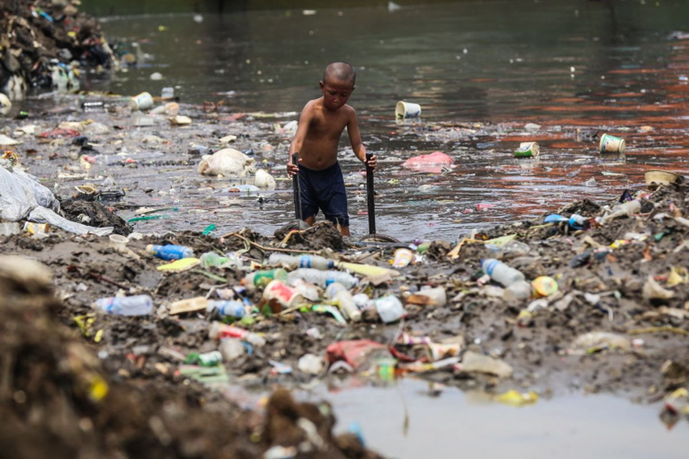

PENCEMARAN LINGKUNGAN
Menjaga Lingkungan untuk Masa Depan
Dibuat oleh: Rainna IX-3/29

Pengertian Pencemaran Lingkungan
Pencemaran lingkungan merupakan keadaan ketika lingkungan mengalami perubahan akibat masuknya zat, energi, atau komponen lain yang dapat mengganggu keseimbangan alam. Pencemaran dapat terjadi pada berbagai bagian lingkungan, seperti udara, air, dan tanah. Perubahan tersebut dapat berasal dari aktivitas manusia maupun proses alami, tetapi sebagian besar pencemaran yang terjadi saat ini disebabkan oleh kegiatan manusia. Pertumbuhan penduduk, perkembangan industri, penggunaan kendaraan bermotor, serta kebiasaan membuang sampah sembarangan menjadi beberapa faktor yang memperparah masalah pencemaran lingkungan.
Pencemaran air merupakan salah satu jenis pencemaran yang sering ditemukan dalam kehidupan sehari-hari. Pencemaran ini dapat terjadi ketika sungai, danau, laut, atau sumber air lainnya tercampur dengan limbah rumah tangga, bahan kimia, minyak, maupun sampah. Air yang tercemar dapat berubah warna, berbau tidak sedap, dan menjadi tempat yang tidak sehat bagi makhluk hidup. Jika manusia menggunakan air yang telah tercemar tanpa pengolahan yang baik, kesehatan juga dapat terganggu. Selain itu, hewan dan tumbuhan yang hidup di dalam air dapat mengalami kematian karena kualitas air yang semakin buruk.
Jenis-Jenis Pencemaran
Selain pencemaran air, terdapat pula pencemaran udara yang sangat berpengaruh terhadap kehidupan manusia. Pencemaran udara dapat disebabkan oleh asap kendaraan bermotor, asap pabrik, pembakaran sampah, dan berbagai aktivitas lainnya. Udara yang tercemar mengandung zat-zat yang dapat membahayakan kesehatan apabila terus-menerus dihirup. Dampaknya dapat berupa gangguan pada sistem pernapasan, berkurangnya kualitas udara, serta terganggunya kenyamanan masyarakat. Dalam jangka panjang, pencemaran udara juga dapat memberikan dampak yang lebih luas terhadap lingkungan dan perubahan iklim.
Jenis pencemaran lainnya adalah pencemaran tanah. Pencemaran tanah terjadi ketika tanah tercampur dengan limbah yang sulit terurai, bahan kimia, plastik, dan berbagai jenis sampah lainnya. Sampah plastik menjadi salah satu masalah yang serius karena membutuhkan waktu yang sangat lama untuk terurai secara alami. Jika jumlah sampah terus bertambah, kesuburan tanah dapat berkurang dan ekosistem di sekitarnya dapat terganggu. Pencemaran tanah juga dapat menyebabkan zat berbahaya masuk ke dalam rantai makanan melalui tanaman dan hewan yang hidup di lingkungan tersebut.
Dampak Pencemaran Lingkungan
Pencemaran lingkungan memberikan dampak yang besar bagi manusia, hewan, tumbuhan, dan keseimbangan ekosistem. Lingkungan yang tercemar dapat menyebabkan berkurangnya keanekaragaman hayati karena beberapa makhluk hidup tidak mampu bertahan dalam kondisi lingkungan yang buruk. Pencemaran juga dapat merusak habitat dan mengganggu rantai makanan. Bagi manusia, lingkungan yang tidak sehat dapat meningkatkan risiko berbagai gangguan kesehatan. Oleh karena itu, pencemaran lingkungan bukan hanya masalah alam, tetapi juga masalah yang berhubungan dengan kualitas hidup manusia.
Masalah pencemaran lingkungan sebenarnya dapat dikurangi jika setiap orang memiliki kesadaran untuk menjaga lingkungan. Hal sederhana seperti membuang sampah pada tempatnya, mengurangi penggunaan plastik sekali pakai, menggunakan kembali barang yang masih layak, dan memilah sampah dapat memberikan perubahan positif. Masyarakat juga dapat mengurangi penggunaan kendaraan pribadi dan memilih transportasi umum atau berjalan kaki untuk jarak tertentu. Di lingkungan sekolah, siswa dapat ikut menjaga kebersihan kelas, halaman, dan fasilitas sekolah serta mengingatkan teman dengan cara yang baik.
Upaya Menjaga Lingkungan
Pemerintah, masyarakat, sekolah, dan setiap individu memiliki peran dalam mengatasi pencemaran lingkungan. Pemerintah dapat membuat peraturan mengenai pengelolaan limbah dan memberikan sanksi kepada pihak yang melakukan pencemaran. Sekolah dapat memberikan pendidikan mengenai lingkungan melalui kegiatan belajar maupun kegiatan kebersihan. Sementara itu, masyarakat dapat bekerja sama melakukan penghijauan, membersihkan lingkungan, dan mengelola sampah dengan lebih bertanggung jawab. Jika semua pihak menjalankan perannya, lingkungan yang bersih dan sehat akan lebih mudah diwujudkan.
Sebagai pelajar, kita juga dapat mengambil bagian dalam menjaga lingkungan mulai dari hal-hal sederhana. Menjaga lingkungan tidak harus selalu dilakukan melalui kegiatan besar. Kebiasaan kecil yang dilakukan secara konsisten dapat memberikan dampak apabila dilakukan oleh banyak orang. Dengan memiliki kepedulian terhadap lingkungan, kita dapat membantu menjaga bumi agar tetap menjadi tempat yang nyaman bagi manusia dan makhluk hidup lainnya. Lingkungan yang bersih bukan hanya memberikan manfaat bagi kehidupan saat ini, tetapi juga merupakan bentuk tanggung jawab kita terhadap generasi yang akan datang.
Kasus Pencemaran Sungai Cisadane
Mari mulai menjaga lingkungan dari diri sendiri, dari hal kecil, dan mulai sekarang.